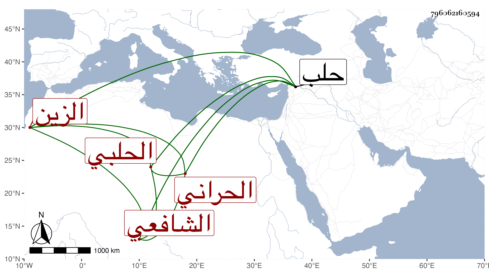

0902Sakhawi.DawLamic.ITO20230111-ara1.EIS1600.796062160594
Biography ID: 796062160594
349
عبد الواحد بن صدقة بن الشرف أبي بكر بن محمد بن يوسف بن عبد العزيز الزين الحراني الأصل الحلبي الشافعي حفيد مسند حلب . ولد بها في ربيع الأول سنة إحدى وسبعين وسبعمائة ونشأ بها فسمع على جده المذكور والشهاب ابن المرحل ، ومما سمعه عليه سنن الدارقطني إلا اليسير جدا وعلى جده مسلسلات التيمي وحدث سمع منه الأئمة قرأت عليه الدارقطني وغيره بحلب وكان خيرا حريصا على الجماعات محبا في الحديث وأهله صبورا على الإسماع يرتزق من وقف جده ، أثنى عليه شيخنا بقوله كما قرأته بخطه رجل جيد دين منقطع بمنزله مات سنة اثنتين وستين رحمه الله .
